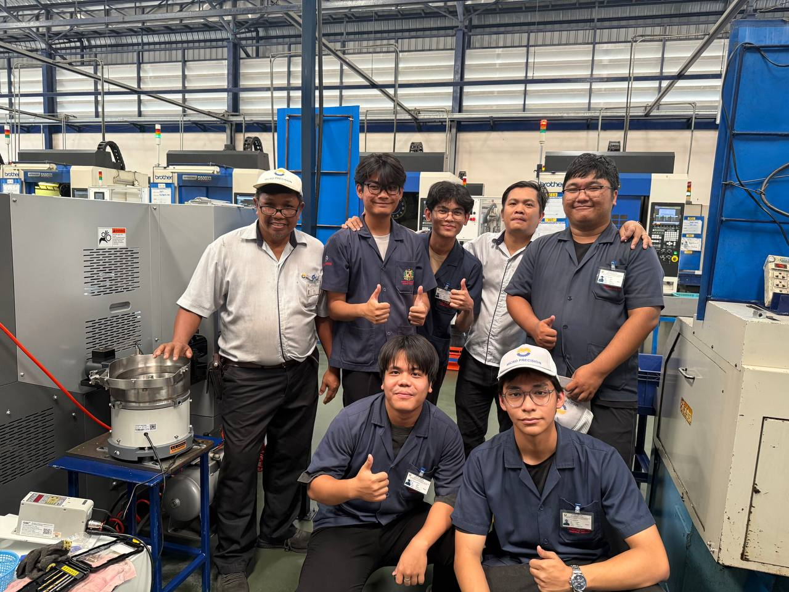
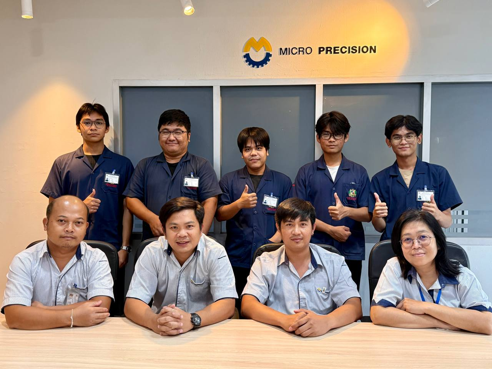

Experience Overview: Industrial Automation Internship
During my internship at **Micro Precision**, I was tasked with designing the **automated vibratory feeder system** to replace the manual loading of parts onto a CNC machine. The goal was to improve process efficiency and reliability in a manufacturing environment by achieving a consistent, automated part feeding cycle.


Key Contributions
- **Component Sourcing:** Selected and sourced all components, including motors, electrical controls, and specialized parts from online vendors.
- **Sensing and Feedback:** Integrated various sensors to monitor the part sequence and provide essential **real-time feedback** to the system.
- **Assembly:** Successfully assembled all mechanical and electrical subsystems for the feeder prototype.
- **Programming:** Controlled the entire sequence using **sensor programming** to manage the automated part feeding cycle precisely.
Result
The successful prototype directly replaced manual labor, automating the part feeding process and ensuring reliable, consistent delivery of parts to the CNC machine. This improved overall production throughput and demonstrated proficiency in developing turn-key industrial automation solutions.
Technology Stack (Components Used)
- Vibratory Motors & Drive System
- Electrical Controls
- Proximity/Optical Sensors